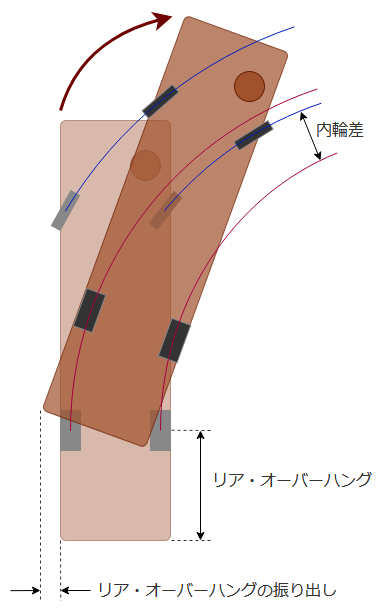

今日は初の技能2コマ。
技能教習 5時限目
10. 鋭角コースの通過
検定課題練習: 鋭角
初見じゃクリア出来る気がしないシリーズ筆頭、鋭角。
120度ターンを3回以内の切り返しで通過する。4回目の切り返しは検定中止。タイヤが縁石に触れたら減点。
侵入～奥で停止
今回は二回切り返しパターンで覚えた。手順は左右両パターン共通。
- 鋭角に侵入後、外側の縁石から 50cm くらいの位置に寄せていく
- そこそこ離れてて良いらしいが、理屈は不明(寄った方がスペース広く使える気がするのだが)
- 次試すときはもう少し寄せてみようかな
- 頂点手前の横棒がアンダーミラーにガッツリ映るところまで前進して停止(上下の真ん中半分まで来たら進み過ぎなので下1/3くらいで)
この時点でビビるくらい前に詰めることになる。ちなみにもう少し手前で止まれば一回切り返しパターンも可能っぽいけど、後ろ過ぎると内輪差で後輪がにっちもさっちもいかなくなるので、前寄りの方が安全。逆に前過ぎて前輪が通過出来ない場合は、最後の一回を追加して切り返すだけで良いしね。
前進一回目
- ハンドルを内側に目一杯切ってから前進
- 前輪が縁石にぶつかる手前で停止(タイヤと縁石はサイドミラーで見える)
- 左右どちらのタイヤなのかは状況によるので、両方見る
よく考えると、サイドミラーに縁石と前輪が映るのって面白いことだよね。運転席が前輪より前にあるからだね(そして運転席は芝生の空中へ)。改めて、大型バスってすげぇ車だなと思う。
後退(切り返し) 一回目
- ハンドルを目一杯逆にしてから、バック
- 後輪が縁石にぶつかる手前で停止
- サイドミラーで見るのだが、遠くて分かりづらい
- 反射板が縁石の真ん中近くまで下がったら、を目安にしている
前進二回目
前進一回目と同じ手順。
切り返し一回の状態で行けそうなら行っても良いが、今回覚えたパターンだとそうはならなさそう。
後退(切り返し) 二回目
後退一回目と似ているが、今度は前輪を通す程度で良いので、いろいろと控えめにする。
- ハンドルを少し逆に切る程度にしてから、バック
- 半分ぐらいで、停止
- 下がりすぎてしまうとこのあとの前進で内側の後輪が厳しくなってくるので
- 最初の鋭角侵入時に奥に行きすぎてしまって切り返しが足りなさそうだったのなら、このタイミングでもバック多めでも良いかも
前進三回目
- ハンドルを内側に切って、再度前進
- 直前の後退で下がりすぎたなと感じたときは、多少前に戻ってからの方がよさそう
- 前輪をクリアしたら、なるべく外側を走るよう前輪を縁石になぞらせる形でハンドルを戻していく
- 内側の後輪を確認しながら脱出
メモ
- 「左折侵入、右ターン」の課題パターンでは注意点が多い
- 左折侵入時、左車線からの侵入になるので左後輪の内輪差が厳しい
- 中央線を越えた状態から侵入して良い
- って言うかがっつり越えた方がよさそうなので、覚えておこう
- 右前輪ギリギリまで前に詰めてから曲がることを意識
- 侵入後の前進一回目の際、芝生奥のバイク用コースにパイロンが置いてあるので、注意
- 外周外回りに右折で出るとき、ちゃんと奥の左車線にツッコんでからハンドルを切る
- 早く切ってしまって "斜めにショートカットする" 形にならないようにする
- 3速に入れるのは2速で加速してから、加速しないときは2速のままでよい
- 最初に教えてもらったときと違うので、人に依るのかも
「右折侵入、左ターン」を3回、「左折侵入、右ターン」を4回やった。一応全部2～3回の切り返しでクリア出来たけど、上手に出来た感じはしなかったなぁ。
外周
内回り、ハンドルをそんなに切らないで侵入して、後輪がクリア出来そうになったら切り増しする、という動きで、ある程度スムーズに曲がれるようになってきた気がする。
技能教習 6時限目
1時限分間が空いていたので、休憩を挟んでから。復習・予習出来るので、実は連続で取られている予約よりありがたいのかも。
11 隘路への侵入
検定課題練習: 隘路
隘路(あいろ)。狭い道っていう意味らしい。
教官によるお手本が始まるよりも前に、「運転教本は読みましたか？」との質問。素直に「もらったときに一回目を通しただけで、ほとんど覚えていません。」と回答。「課題のやり方やルールが書いてあるので、読んでおいてくださいね。」とのこと。あれは予習に使うやつだったのか……
90度曲がって侵入しながら枠の中に車体を収める課題。自分で収まったなと思ったら、パーキングブレーキ掛けてギアをニュートラルにした上で「停止しました。」と教官に宣言する。車体が斜めになってても良いけど、車体が前後に長い分ちょっと角度が付いただけでも横幅が結構増えるので、基本は平行を目指さないと結局枠からあふれることになる。
- 曲がる前の長い線は縁石扱い
- 寄せきらなくても良い(その分侵入に使える量が減るが)
- 90度曲がるまでは停止しないこと
- 曲がるタイミングを位置や量で覚えないため
- 1km/h でも出ていれば OK、半クラも使って良い
- 前後の位置も縦線の中に合わせること
- 車体より 1.2m 長いから、前 60cm/後ろ 60m と考えるとわりと余裕はある
- 切り返すたびに減点、4回で検定終了
- 切り返し一回目から減点って言っていたけど、軽く調べた限り怪しいのでどこかで聞き直してみる
- 正面の横線は壁だと思うこと
- 後退時は、後輪の接地点が縦線を越えたらアウト
- あとそんなに下がると、ここの教習所の場合リア・オーバーハングが車線にかなり飛び出すので、もし車両が走ってきているのにバックしたらアウト
その後、自分で右折侵入4回、左折侵入4回やった。
侵入準備
- 課題手前
- 右折侵入のときも左折侵入のときも対向車線を使うので、対向車が居たら進まない
- 左折侵入のときは手前の角の右折を行わずに待つ
- 右折侵入のときは信号が青になっても進まない
- 縁石に寄せる
侵入
運転席が隘路のど真ん中くらいでハンドルを切る感じか、もう少し遅い感じかな。幅がS字の侵入とかよりも狭いので。どちらかというと状況を見ながら修正する方が大事。
- 内側の後輪が内側の横線先端を踏むラインを意識しながら調整する
- 中盤からは左右両方のミラーを見て位置をつかむ
- 内側過ぎたなと思ったら、角度がなくなる前の段階で外側に直進して取り戻したい
- 収められ無さそうなら素直に切り返す
- 切り返しの減点はたいしたことないと思うべきか
- いや、ちゃんとルール調べてからかな
動画見るだけだと簡単そうなんだけどね。って言うか、結局一回も一発では入れられてない気がする。後輪誘導がなっていないな。
その他
あと、課題に入る直前の曲がり角で何回か、「はい、ここは課題とは関係ないのでキビキビ走ってください」って言われた。"その先ですぐ減速する必要がある" ことが分かっている状態で加速するの、抵抗があるんだよなぁ。まぁ、そういうもんだと思うしかないか。エンジンブレーキ強いからやりやすいのは救い。
今思ったけど、バックモニター見てなかったな。次は活用してみよう。
外周
結構な量の指摘をいただいた。
- 発進時は右ウィンカー
- 隘路からの発進だと、駐車場ど真ん中って感じで、つい忘れてしまう……
- ハンドルを戻すとき、ちゃんと手でつかんで戻す
- ハンドルを素早く動かさない
- 切り増すときにまだ動きが速いっぽい
- お客さんに不快を与えたり、リア・オーバーハングが暴れたりしてしまうということを意識すること
- カーブ中はクラッチを繋いだ状態で曲がる
- 3速で曲がっているとアイドリングでもどんどん加速していくのが怖いので、ついクラッチを切っちゃうクセが付いてしまっている
- 侵入前にクラッチを繋ぎ終わるためには、減速完了のタイミングももっと手前にするべき
- つまり、ストレートの加速も今よりもっと速く開始・終了する必要がある
- ブレーキももう少し強めに掛けて良い
- これは強さの最大値の話なので、強さの変化自体はじんわりと
- って言うかまだ空走距離が長い気がするから、踏み始めはもっと強くないとダメだな
- ストレート、加速し始めたらすぐ4速にする
- 外回り時、中央線をはみ出さずに曲がれるカーブは、対向車が普通車なら気にせずに進む
- はみ出さずに済むかどうかは、カーブの角度じゃなくて半径を見ないと意味がないので、結構分かりづらい
- 教習所内は覚えちゃえばいいんだけど、それも意識出来ていなかったのでそろそろ覚える
- 外回り、中央線をはみ出さずに曲がれるカーブなのに、まだたまに後輪が中央線を踏んでいる
駐車手順
最後、エンジン止めてメインスイッチ切ってからシフトノブを2速に入れて、ふ～全部終わったぞ～って思っていたら、不意に「今、何速に入っていると思います？」との質問。
「えーっと、2速です。」って答えたら、「2速には入っていませんよ。」とのこと。少しだけ考えたけど、意味不明だったので「すいません、分かっていないと思います。」と白旗を上げる。
「今はニュートラルになっています。メインスイッチを切ってしまったあとは、シフトノブを操作してもギアは変わりません。例えば、いま改めてシフトノブを操作しても、エア音がしないでしょ？」
あー、なるほど！フィンガーシフトはドライブ・バイ・ワイヤだから、電源が入っていないと動かないのか。言われてみれば当然だけど、考えたことなかったな。
「なので、正しい手順はエンジン停止後、クラッチ踏んで2速に入れ、そしてメインスイッチを切る、になります。」
いや～、普段 CX-5 ではエンジンスタート・ストップボタンを押してからリバースに入れているけど、あれは物理的にギアを操作するタイプのシフトレバーだから出来るんだなぁ。。
なんか発進時のウィンカーとかカーブ中のクラッチとかも含め、まだまだ基本的な部分で出来ていないところが多いんだなぁと少し凹んだ。
予習
次回、方向転換と縦列駐車。運転教本で予習しておいてくださいとのこと。
二週間あいだが空くから、大型バスの感覚を忘れそうで怖いな～。
今日も技能1コマ。
技能教習 4時限目
やっとシフトパターン確認したけど、やはり N は書いていなかった。
N の位置は左右に動かしてどこが重いかとかで判断するしか無さそう。
運転姿勢(座席位置)
結局、椅子の位置は後ろめにしてみた。ハンドルを手前に引ける範囲が限られているので思ったよりは変えられなかったけど、クラッチ操作は楽になったと思う。
9. 狭路の通行
検定課題練習: 障害物付き S字コース
楽しみにしていたクランクは無かった。というか、教習所によってはクランクの代用品とするためにS字に障害物が付いているらしい。
コースに沿ってポールが立っており、タイヤが縁石に当たるより前にミラーがポールにぶつかるようになっている。
コースが一つしかなくて、またS字は点対称なので、「左カーブ、右カーブ」のパターンしかない(入り口自体は二つある)。
侵入
- どちらの入り口に入るときも、右折侵入(ちなみに出るときも右折)
- 侵入前は車体をまっすぐにする(角に近い方から来たとしてもそのまま曲がっていかない)
- 運転席がフェンスを通り過ぎたくらいまで前に出る
- ハンドルを右に切って、車体左前の角が芝生の上をかすめていくくらいで入っていく
- 外側(右側) に寄せながら入っていく
左カーブ
- 右前輪が縁石内側の白線より1.5本分くらい内側のラインをなぞっていく
- タイヤが白線の上だと、ミラーがギリセーフだけど近すぎる感じ
- 左カーブを後輪が抜け終えたら(だいたい、運転席が右側のポールゾーンを超えたら)、次の右カーブに備えてぐっと左(!)にハンドルを切る(=追加でハンドルを切る)
- 追加でハンドルを切らないと、次の右カーブの外側に行けない
右カーブ
- 同様に、左前輪が縁石内側の白線1.5本手前くらいをなぞる
- カーブ途中で右に切り増さないと、左前輪・左ミラーが接近しすぎるので、注意
- 最後の標識にも気をつける
入る口を変えながら、5回やったのかな。まぁそつなく出来たと思う。
外周
S字コースは問題ないからってことで、早めに切り上げて余った時間で苦手な内回りを練習させてもらった。
内回りのカーブ
未だに感覚がつかめない。適当にやったら、内輪差で後輪が縁石に乗り上げてしまった。
- カーブ序盤はそんなにハンドルを切らなくて良い
- 後半(後輪が越えたあと)は、大きく切るパターンとそのままで行けるパターンがあるので、見極める
- 中央線を飛び出さないと曲がれない場所の場合、対向車が居る場合は手前で止まることになるが、そもそもそうならないように意識する(!)
- 教習所は全体が見渡せるくらい狭いので、手前の直線で速度を調整することで、すれ違うタイミングをカーブじゃないところにずらせば良い
ストレート
- 30km/h まで加速して4速に入れること
- 今まで速度メーター見る余裕無かったけど、いよいよちゃんと見るときが来た
- 1回目、加速し終わってからメーター見たら 18km/h くらいでびっくり
- 結構意識して加速したつもりだったのだが、全然だったわ
- 指示もらってから3回目のストレートで、30km/h をやっと達成した
- 4速は目的じゃなくて手段
- ストレートに入る前のカーブ、曲がり終わる前からアクセルを踏んで加速するように
- ブレーキ、やっぱり遊びも大きい気がするので、最初はある程度大きめに踏んでからの調整がよさそう
帰り道
- 大型バスで普段より遅くハンドル切るのに慣れちゃって、右折のときに CX-5 なのに遅く切ってしまって、結果大回りになってしまった……
- ブレーキも、自分の CX-5 はすぐに効き始めるからビビった
- マツダは遊び範囲が少ないんだったか？エアブレーキになれない理由のうちの一つだったのかも
- 普段、停車するために減速しているとき、クラッチ切るの早すぎるのかも
- とか考えて運転していたらまた普段の運転が分からなくなってきたぜ
今日も技能1コマ。
技能教習 3時限目
7. 坂道の通行
検定課題練習: 坂道発進
みんな大好き、坂道発進。まずは教官にお手本を見せてもらう。
- 侵入時、左ウィンカーを忘れずに
- 坂道でも2速発進
- 登ったあとはすぐ下り坂なので、クラッチ繋ぎきったら繋いだ状態を維持する
その後交代して、自分で 5,6回やった。一回目はホイールパークブレーキ(サイドブレーキ)中にクラッチ繋ぎすぎてエンスト後、やり直してうまく発進。二回目はクラッチ繋がなさすぎて、教官曰く 30cm くらい後退したのちに発進。以降はそれなりに出来たけど、まだ発進後のクラッチのつなぎ方がぎこちなかったかな。
ホイールパークブレーキは ON/OFF のみの制御になっているっぽく、レバーの引き加減で調節してじわじわと解除みたいなことは出来ずに急に抜ける感覚。とは言え、電動パーキングブレーキ(フットブレーキ踏んでないと解除出来ない)なせいで坂道発進に使えない CX-5 よりはなじみやすいかもしれない。
登り坂もそうだけど、もちろん下り坂も初体験。外周へ合流するために下り坂終わりでブレーキ踏んで停まるとき、減速して「そろそろエンストするかな？」ってタイミングでクラッチ切ったら、急に加速してビビった。エアブレーキじゃなくてエンジンブレーキがメインであそこまで減速していたってことね。大型車のエンジンブレーキは大事と聞いていたが、よく分かったよ。すでに低速になっていても、ブレーキペダルを意識して強めに踏んだ方がよさそう。
外周外回り
坂道発進用の丘が外周の外側に位置しているため、終わるつど外回りを一周して戻ってくることになる。おかげで、加減速と右カーブを何回も練習出来た。
加速
タイミングを見て4速に入れられるようになってきた。この回は外回りに車両が多くて、あんまり機会無かったけど。
減速
まだぎこちないが少しずつ感覚をつかんできたかも。
どちらかというと、登り坂で停まるときのブレーキングがまだ分からない。登り坂なのでクラッチ切ってても自然と減速するもんだから気付きにくいけど、実はあんまりフットブレーキが効いてなくて静止後に後退してしまい、慌てて急ブレーキっぽくなっちゃって停まったあとしばらく車体が揺れていたり。。
あとは平地より強く踏んで分かったのだが、ペダルを踏んでいったときの重さの変わり方が油圧ブレーキとかなり違う。序盤は風船踏んだときみたいに軽くてふわんふわんしててどのくらい踏んでいるか分かりづらいし、後半(なのかな？)はゴム板踏んだときみたいなじわっとした堅さに変わって重い気がする。
そういえば、ブレーキが効きづらく感じる理由が追加で一つ分かった気がする。多分、クリープ現象が強いんだわ。いや、MT車だからクリープ現象って言うと不正確かもしれないが、とにかく、アイドリングの状態でクラッチを繋ぐと多少進むアレね。
カーブ手前まで4速だったときは減速しやすかったし、なんならそのあとクラッチ踏んじゃうからクリープ現象は完全になくなるけど、3速で侵入したときは弱いブレーキに打ち勝つ程度のクリープ現象が起きるし、そのあとのカーブも3速のままの予定だから意識しない限りクラッチは踏まないのでその状態が維持されいた、って事だと思う。
3速のとき、カーブに入る直前でブレーキペダルを解除したら勝手に加速したので、気付いたわ。どんだけトルク強いんだって話だｗ
右カーブ
前回言われていた、もっと左に寄って良いと言うのは、どうやら半分曲がって最接近したあとにハンドルをまっすぐに戻し始めるのが遅いということらしく、中心線側に揺り返していたかららしい。それを意識するようにしたら、左側のラインに沿って曲がれるようになってきたし、右後輪が中央線を踏むのも減ってきた。
あとは、あんまりミラーを見ずに前を向いて曲がるというのも意識して出来るようになってきた。前回想像したよりは早く、車幅感覚とかに慣れてきたかも。
ただ、内回りや交差点はやれていないので、まだ油断してはいけない。
8. 後退
後方感覚(元検定課題)
ルームミラーで後ろの窓(かなり遠い、みんなが大好きな深視力が試される)を見ながらポールに向かって後退して、バンパー(≠窓)とポールの距離を 50cm 以内にして停車するやつね。
なんと、最近になって(中型車と)大型車の検定課題から後方感覚が廃止されたとのこと。2022/05/13 からっぽい。調べた感じ、自動車全般にバックカメラが義務化されたからの模様。良い時代になったなぁ、って言い切っていいかは微妙ｗ
まぁ、バックカメラがないとバスのすぐ後ろって全く見えないからね。。路上じゃ、カメラがない場合は誘導がないとバック出来ない気がする。
とは言え、後退の練習自体は必要なので同様の内容を5回くらいやらせてもらった。
正直、バックカメラ見て良いならかなり余裕だったので、2回目からは見ないでやったんだけど、「この辺かな？」って止めてからバックカメラ見たら全然離れていたので追加で下がるパターンばっかりだし、逆に最後はぶつけそうになってしまった(教官が声を上げてくれたから停まったのだが、見に行ったら 10cm なかった)ので、あんまり上手とは言えない感じだったな……
おまけ: 鋭角
最後、教習車両を鋭角に止めるときに、各種タイミングとかは概ね指示してもらいつつ鋭角を自分でやらせてもらった。
鋭角内に入ったあと最初にハンドルを切るタイミングが想像よりかなり前進してからだったので、2回切り返しパターンなのかなと思っていたのだが、実際には1回切り返しで行けてしまった。じゃぁあれよりさらに前に出ても大丈夫って事なのか。。
切り返し中、縁石に向かって前進するときは、アンダーミラー見れば良いから乗り上げることは無さそう。後退は、少し難しいかもしれない。
あと、前回教官に実演してもらったとき同様、宙に浮いている感じがすごかった。これは鋭角の練習のコマも楽しみだ。
スケジュール変更
スケジュールの組み直しを昨日依頼していたので、受け取りに。とある土日に予定が入ってしまったので、そこ以降を後ろにずらす必要があったので。
教習が順調にいったときの卒業予定、09/06 くらいだったのが10月以降へ伸びた(詳細未定)。
今日も技能1コマだけ。
技能教習 2時限目
理屈や仕組み、背景などを根拠に説明してくれるタイプの教官だったので、非常にわかりやすかった。
名前見たときに気付いたけど、この人、学科教習でも印象に残っていた人だわ。
「自分は面倒くさい性格をしているので、ルールだけを聞いても覚えられないんですよね。背景とか理由とか、ちゃんとした根拠とセットじゃないと。」っていう話とか、1000ページ近くある『学科教習の手引』を個人で持っている話とか、個人的に好感度高かった。
教習項目以前の部分
前回教えてもらえなかったっぽい、基本的な部分を追加で
- エンジンを掛けるのは、グロープラグの余熱表示灯(コイルみたいなマーク)が消えてから
- 発進時は前方、左右、左右後方に加え、車内の安全確認も行う
前回疑問だったところを質問
エアブレーキ
- 仕組み上、効き始めるまでが遅く感じる
- 遊びのエリアを潰しておくイメージで、さっさと少し踏んだ状態にしてしまうのが良い
- エアブレーキだと低速からのブレーキコントロールは難しいので、もう少しスピードを出して練習した方が良い
加えて、そもそもブレーキペダルに踏み換えて構えるタイミング、踏み始めるタイミングが遅いとのこと。他人より早いタイミングで踏むタイプだと思っていたけど、全然甘かったな……
クラッチペダルまでの距離
むしろ前回より前に座るよう指示された(!)
半クラになるエリアがさらに手前に位置することになってしまったが、一旦はこれで慣れてみて欲しいとのこと。
思ったよりは慣れてきたけど、そのあと自分の車に戻ったとき、深く考えずにクラッチつないだら想像より早くつながってしまいビビったｗ
っていうかアレだよね、教習所によっては路線バスと観光バスが技能教習のたびにランダムに割り当てられるところもあるわけだし、環境は恵まれている方だよね。いや、むしろ本来は常にいろいろな車種・設定でも乗れるようになれって事だろうか。
スイッチ類
- ハザードは左レバーを手前に引く(普通車のウォッシャー方向)
- ワイパーは左レバーをひねる(普通車のリアワイパー)
あ、シフトパターンプレート見ようと思っていたの、忘れていた。
その他アドバイス
- ハンドル回すときに座席から肩が離れてしまっているので、ハンドルはもっと手前で良い
- 第二関節くらいまでか
- 時計の9時15分の位置でハンドルを持ったときに、肘を曲げてお盆を持っているイメージ
- あと、内掛けハンドルにならないよう注意
5. 時期を捉えた発進と加速、目標に合わせた停止並びに路端における停止及び発進
リア・オーバーハング
まず、「尻振り」とか「リア・オーバーハング(の振り出し現象)」とか呼ばれているものについて、三角コーンを使って実演してもらった。
- 車体で後輪より後ろにある部分(リア・オーバーハング)が、例えば右に曲がるときに逆方向の左側にはみ出す現象のこと
- 何も考えずにハンドルを切って曲がっていくと、80cm(!) 位ははみ出す
- なので、右折するときに左後ろにいる原チャリとか、左折するときに右側のレーンを直進している車両とか、そういうのにぶつかる可能性がある

知識としては知っていたけど、曲がる方向と逆側の安全確認をする必要があるのにまだ慣れない。
検定課題練習: 路端停止
そして、もう課題である。俺、まだ大型バスをトータル15分くらいしか運転してないぞ。
路端の左いっぱい(30cm 以内)に沿って車を止めたあと、前方にある障害物を右に避けていく課題。ハンドルを早く切りすぎるとリア・オーバーハングが左のガードレールとか(を模したポール)に当たってしまい、逆に切るのが遅いと前方の障害物を避けるほどは右に出られない、というもの。
- どうせ同じだけ尻を振るなら、さっさと序盤に振って時間を稼いだ方がその分多く右に出られる
- 振り終わったら、それ以上近づかないようにハンドルを戻し始めること
- 左後ろがポールにぶつからないかどうか、ミラーだけで無く直接目視でも確認すること
まず、まだ車幅感覚が無くて左にどのくらい寄っているのかがピンとこない。寄せる手前がたまたま交差点になっているコースなので、序盤に寄せすぎちゃっても大丈夫だからやりやすい方だとは思うんだが。
次に、指定の前後位置に止めるのが難しい(前方の障害物までの距離が規定距離になるように、停止位置にカラーポールがある)。まだブレーキに慣れていないせい。
さらに、左後ろがどのくらいポールに近づいているのか、いまいち分からない。正直、11m ある車体の対角線がポールとどのくらい離れているか、ミラーだろうが直接目視だろうが分かる気がしない……
3回か4回やらせてもらって、まぁアドバイスもらいながらなんとなく出来たけど、多分たまたまだな。。
あと、2速発進時、3速変更時のロッド操作が真上、真下なのに未だに慣れなくて、考えながら操作しないとミスる。
6. カーブや曲がり角の通行
路端停止の開始地点に戻るために、都度外周を少し走る感じだったかな。(外回り、内回り両方適度に)
普通に走るだけなんだが、まだ慣れない。しかも補助ブレーキを2回くらい踏まれてしまった (中央線をはみ出して曲がるカーブなのに対向車に気付かなかったので……)。あと、ハンドルも操作してもらった記憶があるが、席立ってやってくれたのかな？
- ライン取りのイメージが出来ていないので、カーブ中フェンスが近づいたとき慌てて追加でハンドルを回すことがある
- 「追加しなくても曲がりきれるよ」って言われるシーンが多かった
- 瞬間的なフェンスとの距離じゃなくて、バスが今どれくらい曲がりながら走っているか、が意識出来ていないから慌てている
- すでに結構ハンドルを切っているなら、そのままでも大きく角度が変わっていくはず
- 回すにしても、実際のバスの運転手みたいに、じわじわと一定のペースで回せるようにする
- 前輪が運転席より後ろにあることを意識する
- というか、ハンドルを切り始めるタイミングがまだ早いらしく(意識しているつもりなんだが……)、カーブの最接点に浅く侵入してしまうせいで、カーブ終わりに膨らみ過ぎる
- 曲がり角の縁石と同じ半径で曲がれる車体サイズじゃないので、後輪がアウト・イン・アウトしないといけない
- とは言え、事前に遊びを殺しておくために事前に多少回しておくイメージは必要とのこと
- また、特に右左折のときなど、もっとハンドルを回せるのに途中で回すのを止める癖が付いている
- ミラーばかり見ているので道に対して平行にならないことが多い
- 右カーブも左カーブも、もっと左に寄って良い
- 今でも結構ギリギリに見えていたんだけど、そのうち慣れてもっと近づけるのだろうか
- ストレートに備えてカーブ終わりから加速を始める
なんというか、大型バスをなめていたというか、もっと簡単に運転出来るもんだと思っていた。「中型乗ったことない人がいきなり大型乗ると大変だよ」的な記事はいくつか見ていたんだが、どうせすぐ慣れるだろうという慢心があった気がする。
あとシフトチェンジな。普段 MT 乗っているから余裕だと思ったら、そんなこと無かった。
っていうか、未だに心のどこかで「自分は周りとは違うんだZE」って思っているってことなんだよなぁ。凹んできた。
帰り道
なんか、加減速やシフトチェンジの仕方とか、カーブの曲がり方とかを意識しながら車乗っていたら、「あれ、普段どうやって運転していたんだっけ？」ってなって運転感覚が分からなくなってきた。
理屈を考えすぎているだけなら良いんだけど、もしかして今までも運転が下手だったのか？それに今まで気付いていなかったのか……？とか、悩んで来ちゃったぜ。
あとアレね。大型車はサイドミラー大きくて良いよね。普通車に戻ると小さすぎてビビる。
次回へ備えたメモ
- 2速発進時のロッド操作は真上、3速変更時は真下
- 真上・真下で覚えるより、いっそのこと (普通車で言う) 3速で発進して、4速に変更するイメージでやってみるか
- ブレーキングの練習のためにも、ストレートではもっと加速する
- 2速つないだらさっさと3速にする→3速をいつもの感覚より強く加速させる→4速にすることを目指す
- 教官の模範運転見ていると、普段自分が CX-5 運転しているときの加速より勢いがある
- 4速にしないときは加速後も3速をつないだままになるけど、その状態で急にアクセル離すと揺れるので注意
- ブレーキはもっと手前から軽く踏む
- 曲がるときはミラーを見過ぎないで前を見る
- ハンドルはゆっくり回す
- おまけ: シフトパターンプレートを見る
今日は技能1コマだけなので、わざわざ遠出するのも若干面倒な気持ちになる。まぁそれはスケジュール通りで、しばらくは一日 1, 2 コマずつの日が続くのだが。
とは言いつつも、今日は初めての技能教習なので、楽しみでもある。めっちゃ緊張したが。
技能教習 1時限目
学課教習とは違って、1番の項目から順番に習う。基本的なことから習っていかないと運転出来ないので、ある意味当たり前か。
教官側も生徒側の進捗を知らないので、その時限で教習原簿を渡すまで次に何やるかを知らないのが、少し面白い。
1. 車の乗り降りと運転姿勢
座席の調整の仕方とか。
- ハンドルをいったん一番奥にずらす
- お尻と背中を座席に押し込む
- 座席上下の二つは一番上にしておく
- リクライニングは 90度に 見えるようにしておく。本当は 105度になるように、とかなんとか
- ブレーキペダルを踏みきっても足が伸びきらない位置まで、座席を前に出す
- ハンドル頂上に手を伸ばしたときに、第一関節に乗る位置までハンドルを手前に出す
- シートベルト
教習用のバスなので、前扉が無くて代わりに教官が座る助手席があるのが面白い。
補助ブレーキや状況確認用ランプがあるのは良いんだけど、多分、普通車と違ってハンドルは取ってくれないんだろうな。
2. 運転装置の取り扱いと日常点検整備等
運転装置
大半は普通車と一応同じなので、ささっと説明を受けた。
- エンジンの起動前・停止後には別途、奥にあるメインスイッチを ON/OFF する必要がある
- ON は引っ張る、OFF は左に回しながら押し込む
- 排気ブレーキは左のレバーを下に(普通車のワイパー方向)
- シフトレバーはフィンガーシフト
- ドライブ・バイ・ワイヤになっていて、圧縮空気による変速操作を電気信号で遠隔指示する形になる
- シフトレバーが入ってから、ギヤが実際に入るまでに、2秒(!)くらいかかる
- あれ、そういえばハザードはどうやるんだ？
シフトパターン
2速発進メインだから偶数段・奇数段が普通車と上下逆なのは良いとして、N の左右の位置がイメージしていたものと違った(と言うか車種によって違うっぽい)。
| タイプ |
シフトパターン |
発進時の操作 |
| 普通車 |
 |
 |
大型バス
その1 |
|
 |
大型バス
その2 |
 |
|
- 普通車、一般的なパターン
- 普段運転している CX-5 もこれ、実際には 6速まであるけど
- 大型バス その1、知っていたパターン
- 点線はロッド操作が重くなるところ
- 1速はエクストラロー扱いでほぼ使わないから無視すると形は同じだし、2速発進時に左、上、と操作するのも同じなので、普通車との実質的な違いはない
- 大型バス その2、知らなかったパターン
- パターンの形自体はその1と同じだが、N の位置が違うため、発進時の操作も変わる
- 教習車はこちらのタイプだった
- 発進時に真上に押し込むことになるし、そのあと3速にチェンジするときも(左下では無く)真下に押し込むのだが、まだ慣れない
- 手癖で左に押してしまい、1速(とR)の方に入りかけるのを何回かやった
- R(リバース)についてはいくつかパターンが細分化されるので上の表では省略しているが、大型車の場合は大体左上
ところで、シフトパターンプレート見ても N の位置は書いてなかった気がするんだが、その1とその2の違いはどうやって判断すればいいんだろうか。
日常点検整備
一回降りて車体を回りながら、バスならではのポイントを中心に。トラックについても軽く。
ディーゼルエンジン由来のポイント説明のときに、「自分が普段乗っているのもディーゼルなんですよ」って言ったら少し驚いていた。MT乗っているって言ったときには響かなかったのに、意外だｗ
3. 車両特性に基づく運転死角と車両感覚等を理解した運転操作
死角とかは、あんまり説明されてないかも。
車体高さの話はあった。「あの可変ゲートくぐれると思う？」「目視の感覚、結構当てにならないでしょ。」とか。あとは、そもそも自分の車の高さを知っておくことが大事というのと、トラックの場合だと荷物のせいで日によって高さが変わることもあるから要注意だ、とのこと。
こういう、自分の教習コースに直接関係がないトラックとかの範囲もある程度教えてくれるのはありがたい。大型二種(大型バス)は普通二種(タクシー)とか大型一種(大型トラック)とかの上位免許だけど、それらとは教習車両も違うし、検定の課題も違うからね(だから実は上位免許は厳密には上位互換じゃないんだよね)。
4. 基本的な運転操作
そして、実際に運転。わりといきなり運転させられる感じで、「あれ、説明終わり？アドバイスとか無しでいきなり発進なの？って言うかバス、でかくね？」って思ってしまった。
残り時間もそんなに無かったから、多分 10分～15分くらいしかやっていないと思うんだけど、めっちゃ疲れた。終わったあと自分の車で帰りたくないと思う程度には、疲れた。
2限連続とかじゃなくて良かったと思ってしまったよ。場内の外周を数周と右左折・信号を数回ずつだけだったハズなんだけどね。
クラッチペダル
思ったより手前まで戻さないとつながらなかった。おかげで、半クラのときに下記シフトチェンジミスと勘違いしやすかった。
多分、椅子が近い。次回は、座席をあんまり近づけすぎないようにする。
シフトチェンジ
何回かミスった。シフトレバーを2秒くらい押しっぱにしないと入らないのだが、いつもの癖ですぐ手を離してしまう。
すぐ忘れるので、次やるときは意識必要。
あと、2速つながったらすぐ3速にする。って言うか 3速でもめっちゃトルクある。昔ぼむ者＠が「バスは低速トルクの化け物だから」って言っていたが、20年越しに体で理解した。
ブレーキ
これが一番ヤバい。エアブレーキ、マジで慣れない。
最初は全く効いていないように感じて、そのあとにガックンとなってしまう。
ネット上の一説によると、まずはある程度踏んで、そのあとじわじわ戻していくのが良いとか？
教官に、効くまでに時間が掛かるように感じる仕組みを聞いておきたい。ペダルの遊びが大きいだけなのか、効くまでの時間に遅延があるのか。
正直、街を走る路線バスを見る目が変わったよ。よく、あんななめらかに加減速出来るなぁ。
次回は、直線後のカーブ手前で、毎回減速の練習をするべき。そのためにも、直線では速度を上げる。
車幅感覚
正直、シフトチェンジとブレーキに精一杯だったので、あまり見られていない。
直線は、ちゃんと左右のミラーを見ないとダメかもしれない。普段よりかなり中央線に近いところを走っているつもりだったのだが、何回か「少し左に寄っていますね」って言われた。
内輪差
ホイールベースが長いので、内輪差も大きい。
後輪は、サイドミラーで見える反射板の、さらに奥にある。縁石と後輪との距離を都度確認する。
さらに、運転席は前輪より前にあるので、ハンドルを切るタイミングはさらに遅い。
交差点では気をつけてゆっくり曲がるから、まだなんとかなりそう。はみ出しまくってから曲がるイメージも元々持っているしね。
ヤバいのは外周のカーブ。ある程度スピードがあるから確認・判断する暇が少ないし、そもそも普段は普通のカーブで内輪差は意識していないから気付きにくい。
とりあえず、(場内では？) 対向車線にはみ出しまくって良いのを覚えておく。対向車に注意。
おまけ: 教官による鋭角
教習車両を停めておく場所が鋭角の中だったので、最後教官がそこにバスを戻すときに、 鋭角での切り返しを実演してくれた。狭い道で120度ターンする、二種免許取るのに必要な課題の一つね。
……理屈は分かっていたよ？タイヤが縁石を踏まなければ車体が芝生の上にはみ出しても良い。普通車はタイヤの後ろに運転席があるが、バスはタイヤより前にあるから、運転席ごと芝生の上に飛び出すことになる。うん、知識としては理解していた。こんな動画も見たことあるしね。
でも、実際に体験したらマジ意味不明で面白かった。
もうぶつかるから止まろうと思ってからさらに 2m くらい進むので壁の中に居る感覚になったり、道路の上じゃ無くて芝生の上に居るので宙に浮いている感覚になったり、助手席座っているだけだったのにとにかく斬新だった。
って言うか、鋭角に入るための右折の時点で芝生にはみ出しながら侵入していったのだが、それだけで謎の感動があったわ。
夜飯
今日は 18:10 終わりだったので、前回候補に挙げつつも営業時間的に行けなかったらーめんしょっぷ中吉へ。具体的な数字は思い出せないが、こっちも八年ぶりくらいな気がする。って言うかいつの間にか移転していた。

牛すじぶっかけ(温かい麺)＋ニンニク。
甘辛いタレ、流水で一度締めたあとに温め直した食感の良い麺。そしてとろとろの牛すじ。こちらも相変わらず美味しかったです。